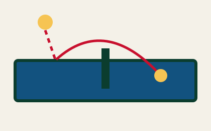
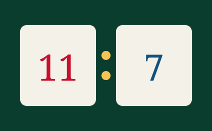
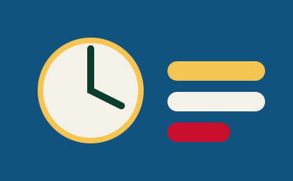

The Serve
The ball rests on an open palm, is thrown at least 16 cm straight up, and must be struck as it falls. In singles it may land anywhere on the opponent's half; in doubles it must travel diagonally from right half to right half.
The serve must be visible to the receiver the whole time — hiding the ball behind the body or the free arm is a fault and gives the point away. Service changes every two points.

Scoring
A game is played to 11 points and must be won by a margin of two. If the score reaches 10–10, play continues with service alternating every single point until one player leads by two. A match is usually best of five or best of seven games.
A point is lost when a player fails to make a good return, hits the ball twice, moves the table, or touches the playing surface with the free hand.

The Expedite System
If a game is still going after 10 minutes and fewer than 18 points have been scored, the expedite rule starts. From then on the receiver wins the point if they make 13 good returns, which forces the server to attack instead of stalling.
Once expedite is in force it applies for the rest of the match.

Point by Point
| Call | Meaning | Result |
|---|---|---|
| Let | Serve clips the net and still lands legally | Serve is replayed, no point |
| Fault | Illegal toss or hidden serve | Point to the receiver |
| Edge | Ball touches the top edge of the table | Ball is good, rally continues |
| Side | Ball hits the vertical side of the table | Point to the opponent |
| Deuce | Score reaches 10–10 | Alternate service every point |
Common Beginner Faults
- Tossing the ball forward instead of straight up
- Serving from below the level of the table
- Forgetting to change service after two points
- Resting the free hand on the playing surface
- Volleying the ball before it bounces on your half
Where to Next?
Return to the Overview, or check your kit against the specifications on the Equipment page.